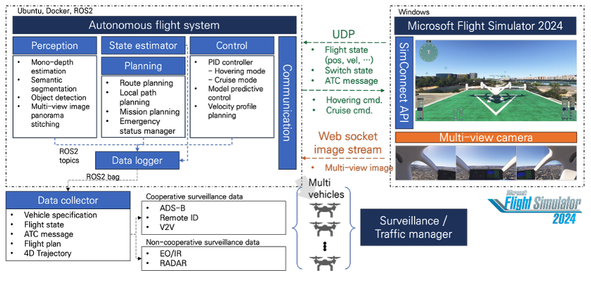

Projects
Active Research Projects

Funded
Autonomous Navigation and Control for Advanced Air Mobility Systems
This project focuses on developing learning-based navigation and control algorithms for advanced air mobility (AAM) platforms, including eVTOLs and defense UAVs. We design robust autonomy stacks capable of operating in complex, dynamic environments, integrating deep reinforcement learning, multi-modal state estimation, and adaptive control for next-generation defense aerial systems.
Ongoing Research Directions
Our lab is actively pursuing various government and defense research proposals, striving to secure next-generation autonomous and robotic defense technologies.